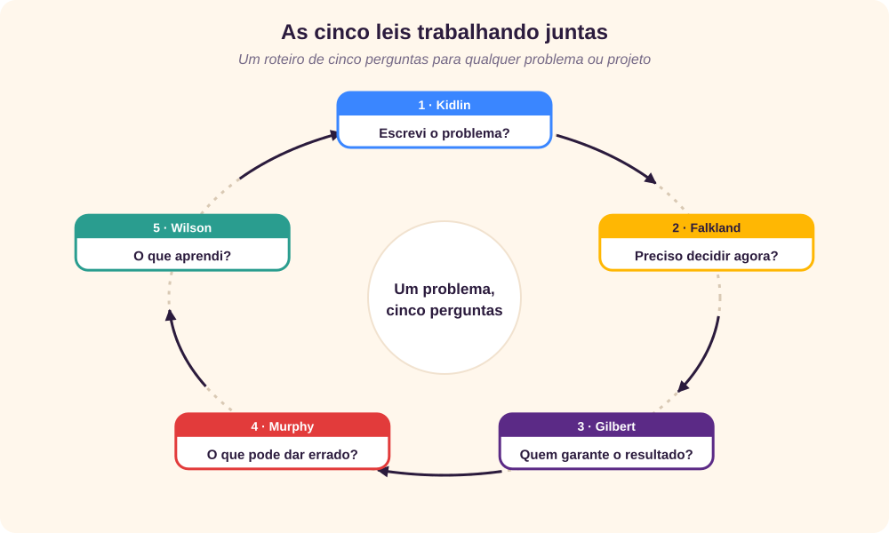

Leis que não são leis
Nenhuma destas cinco “leis” foi provada em laboratório. São ditados, regras práticas que resumem numa frase algo que muita gente aprendeu errando. E é justamente por isso que funcionam: são fáceis de lembrar na hora em que mais importam.
Cada uma responde a uma pergunta diferente do dia a dia: o que pode dar errado, se o problema está claro, se é hora de decidir, onde investir o próprio tempo e quem responde pelo resultado. Juntas, formam um pequeno roteiro para enfrentar qualquer problema, de um projeto de software a uma reforma em casa.
Um cuidado antes de começar: a origem de algumas delas é bem documentada, como a de Murphy; a de outras é incerta e circula sobretudo na internet. Ao longo do texto, deixamos claro o que é fato histórico e o que é atribuição popular.
| Lei | Em uma frase | A pergunta que ela faz |
|---|---|---|
| Murphy | Tudo o que pode dar errado, dará errado. | O que pode falhar, e como me preparo? |
| Kidlin | Se você consegue escrever o problema, ele está metade resolvido. | O problema está claro e escrito? |
| Falkland | Se não é necessário decidir agora, não decida. | Esta decisão precisa ser tomada hoje? |
| Wilson | Com o conhecimento certo, o dinheiro certo vem até você. | Estou investindo no que sei? |
| Gilbert | Quem assume uma tarefa é responsável por achar o melhor caminho até o resultado. | Quem garante que isso aconteça? |
Lei de Murphy
“Anything that can go wrong, will go wrong.”
“Tudo o que pode dar errado, dará errado.”
Origem: um trenó-foguete no deserto
Entre 1948 e 1949, a Força Aérea dos Estados Unidos conduziu o projeto MX981, na base de Muroc, depois rebatizada de Edwards, na Califórnia. O objetivo era medir quanta desaceleração o corpo humano aguenta, usando um trenó movido a foguetes que corria sobre trilhos e freava bruscamente. O coronel e médico John Paul Stapp servia de cobaia. [15]
O capitão e engenheiro Edward A. Murphy Jr. propôs sensores para medir a força sobre o cinto de Stapp. Num dos testes, os sensores marcaram zero: tinham sido instalados ao contrário. Irritado, Murphy teria dito algo como “se existe um jeito errado de fazer, ele vai achar”, referindo-se ao técnico. A versão exata da frase é disputada até hoje, mas a lei ganhou fama quando Stapp, numa entrevista coletiva, explicou que ninguém tinha se ferido nos testes porque a equipe sempre levava em conta a “lei de Murphy”. [15] [7]
O que ela ensina
Ao contrário do que parece, a lei de Murphy não é pessimismo: é prevenção. Para Stapp, ela significava pensar em tudo o que pode falhar antes do teste e agir para evitar. Não é uma previsão de azar; é um lembrete de que, com tempo e repetições suficientes, até o erro improvável aparece.
A indústria transformou essa ideia em técnica. No Japão dos anos 1960, Shigeo Shingo criou o poka-yoke, “à prova de erros”: dispositivos que tornam o engano impossível ou evidente. [16] O pen drive que só entra de um lado e o carro que não dá a partida fora do “P” são exemplos do dia a dia.
Exemplos
- Um erro caro: em 1999, a sonda Mars Climate Orbiter, da NASA, se perdeu ao chegar a Marte porque uma equipe usava unidades métricas e a outra, unidades americanas. Ninguém conferiu a conversão. [14]
- Falhas de propósito: em 2011, a Netflix criou o Chaos Monkey, um programa que desliga servidores ao acaso em produção. Se a falha vai acontecer de qualquer jeito, melhor que aconteça quando a equipe está olhando. [10]
- Pré-mortem: o psicólogo Gary Klein propõe imaginar, antes de começar, que o projeto fracassou, e pedir a cada pessoa que escreva por quê. Os riscos aparecem antes de virar problemas. [6]
- No dia a dia: backup antes de formatar, pneu estepe calibrado, sair de casa com folga em dia de prova.
![Uma mudança de software precisa atravessar cinco camadas de proteção antes de chegar ao usuário: revisão de código, testes automatizados, implantação gradual, monitoramento e alertas, e plano de volta. Quatro erros entram. O nome de variável trocado é barrado na revisão; o cálculo errado de frete, nos testes; a lentidão com dados reais, na implantação gradual; a falha só no horário de pico é detectada pelo monitoramento e desfeita pelo plano de volta. Nenhum chega ao usuário. Mensagem: nenhuma camada pega tudo, mas juntas elas impedem que o erro chegue ao usuário.](rc_images/CincoLeisMurphy.svg)
Lei de Kidlin
“If you can write it down, it is half solved.”
“Se você consegue escrever, está metade resolvido.”
Origem
Não se sabe quem foi Kidlin, e a lei circula sobretudo em textos de produtividade. [3] A ideia, porém, é antiga e tem pedigree: em 1938, o filósofo John Dewey escreveu que “é um ditado familiar e significativo que um problema bem formulado está metade resolvido”. [4]
O que ela ensina
Na cabeça, um problema é uma nuvem: mistura sintomas, suspeitas, emoções e urgência. Escrever obriga a escolher palavras, e escolher palavras obriga a pensar. Ao pôr no papel, você descobre o que sabe, o que não sabe e o que falta perguntar. O problema ganha contorno, e o que tem contorno pode ser medido, dividido e delegado.
Um roteiro simples ajuda: o quê acontece, quando, onde, desde quando, qual o impacto e como saberemos que foi resolvido.
Exemplos
- Relato de defeito: “o sistema está lento” não leva a lugar nenhum. “A tela de pedidos leva 12 segundos para abrir, só na região Sul, desde a versão 4.2” já aponta onde procurar.
- O pato de borracha: muitos programadores explicam o código, linha por linha, a um patinho de borracha, e descobrem o erro no meio da explicação. [17] Escrever tem o mesmo efeito.
- Histórias de usuário: “Como cliente, quero acompanhar meu pedido para saber quando ele chega” força o time a dizer quem, o quê e para quê.
- Na vida pessoal: listar as dívidas, com valor e juros de cada uma, costuma transformar a angústia em plano.
![Dois painéis com o mesmo problema. À esquerda, na cabeça: frases soltas como o sistema está lento, acho que é o banco de dados, só acontece às vezes, os clientes estão reclamando e alguém precisa ver isso. Uma seta chamada escrever leva ao painel da direita, no papel, com o problema estruturado: o quê, a tela de pedidos leva 12 segundos para abrir; quando, de segunda a sexta, das 9h às 11h; onde, só nas lojas da região Sul; desde, a implantação da versão 4.2; impacto, cerca de 300 pedidos atrasados por dia; meta, abrir em menos de 2 segundos. Embaixo: metade resolvido, agora dá para medir, dividir, priorizar e pedir ajuda.](rc_images/CincoLeisKidlin.svg)
Lei de Falkland
“Until and unless absolutely necessary, don’t make that decision.”
“Até que seja absolutamente necessário, não tome essa decisão.”
Origem: o Parlamento inglês de 1641
A lei vem de Lucius Cary, segundo visconde de Falkland (c. 1610–1643), escritor e deputado inglês. Num debate de 1641 sobre abolir ou não os bispos da Igreja da Inglaterra, ele argumentou: “onde não é necessário mudar, é necessário não mudar”. Falkland morreu dois anos depois, na Primeira Batalha de Newbury, durante a Guerra Civil Inglesa. [13] Com o tempo, a frase foi adaptada para o mundo das decisões: “quando não é necessário tomar uma decisão, é necessário não tomar uma decisão”. [5]
O que ela ensina
Toda decisão fecha portas. Decidir cedo demais é decidir com pouca informação; decidir tarde demais é perder as opções. A lei de Falkland pede que se decida no momento certo: quando já se sabe o bastante e as alternativas ainda estão abertas. O desenvolvimento de software enxuto (lean) chama isso de último momento responsável: adiar compromissos irreversíveis até que adiar mais custe caro. [12]
Atenção: isso não é procrastinação. Esperar é uma escolha consciente, com data para decidir e com trabalho para reunir informação enquanto isso. E nem toda decisão merece espera. Jeff Bezos, fundador da Amazon, separa as decisões em dois tipos: portas de mão única, irreversíveis, que pedem calma e consulta; e portas de mão dupla, reversíveis, que devem ser tomadas rápido, porque errar custa pouco. [1]
Exemplos
- Arquitetura de software: não escolha hoje o banco de dados que só será necessário daqui a seis meses. Isole essa escolha atrás de uma interface e decida quando conhecer o volume real de dados.
- Contratação: contratar um especialista caro “por via das dúvidas” é uma porta de mão única. Um consultor por algumas semanas é uma porta de mão dupla.
- Reunião tensa: responder a um e-mail com raiva é uma decisão que raramente precisa ser tomada na hora. Dormir sobre o assunto custa pouco.
- Quando não esperar: um servidor fora do ar, um paciente na emergência, um prazo legal. Aí a decisão já é necessária.
![Gráfico com o tempo no eixo horizontal. A curva de incerteza cai com o tempo, à medida que chegam informações; a curva de custo de mudar de ideia sobe. À esquerda, a zona cedo demais, em que se decide no escuro; no meio, destacado, o último momento responsável, em que já há informação suficiente e as opções ainda estão abertas; à direita, a zona tarde demais, em que as opções somem. Embaixo, dois tipos de decisão: porta de mão dupla, reversível, em que se decide rápido e se ajusta; e porta de mão única, irreversível, em que se espera, coleta dados e decide com calma.](rc_images/CincoLeisFalkland.svg)
Lei de Wilson
“If you have the right knowledge, the right money will flow to you.”
“Se você tiver o conhecimento certo, o dinheiro certo virá até você.”
Origem
Assim como a de Kidlin, a lei de Wilson não tem autor identificado. É apresentada como o princípio de que priorizar conhecimento e inteligência leva, com o tempo, ao sucesso, inclusive financeiro. [9] A ideia lembra a frase popularmente atribuída a Benjamin Franklin: “investir em conhecimento rende os melhores juros”.
O que ela ensina
O conhecimento funciona como juros compostos. Cada coisa que você aprende torna mais fácil aprender a próxima, e cada competência nova abre portas que geram novas oportunidades. O escritor James Clear popularizou uma conta que ilustra isso: melhorar 1% por dia durante um ano deixa você cerca de 37 vezes melhor; piorar 1% por dia leva quase a zero. [2]
1,01³⁶⁵ ≈ 37,8 → 1% melhor por dia, durante um ano 0,99³⁶⁵ ≈ 0,03 → 1% pior por dia, durante um ano
A conta é uma metáfora, não uma promessa: ninguém melhora exatamente 1% por dia. Mas ela mostra por que pequenos investimentos constantes vencem esforços grandes e raros. Repare também na palavra certo, que aparece duas vezes na lei: não é qualquer conhecimento, é o conhecimento que resolve problemas que alguém valoriza.
Exemplos
- Carreira em TI: quem aprendeu computação em nuvem ou análise de dados antes de virarem moda colheu as melhores oportunidades quando viraram.
- Profissional em T: profundidade numa área (a haste do T) somada a noções de várias outras (a barra) torna alguém difícil de substituir.
- Empresas: times que reservam tempo para estudo, documentação e troca de conhecimento resolvem problemas mais rápido e dependem menos de heróis.
- Hábito simples: 20 minutos de leitura por dia somam mais de 120 horas por ano.
Lei de Gilbert
“When you take on a task, finding the best ways to achieve the desired result is always your responsibility.”
“Quando você assume uma tarefa, encontrar as melhores maneiras de alcançar o resultado desejado é sempre responsabilidade sua.”
Origem
A lei costuma ser atribuída a Gilbert Lafayette Laws (1838–1907), político, editor de jornal e empresário americano, deputado pelo estado de Nebraska. [8] [11] Não há registro de que ele a tenha formulado, e um detalhe chama a atenção: o sobrenome dele era Laws, “leis” em inglês. É bem possível que “Gilbert’s Laws” tenha virado “lei de Gilbert” por pura confusão. Outra versão da mesma ideia diz que “o maior problema no trabalho é que ninguém diz o que fazer”. [8]
O que ela ensina
Seja qual for a origem, a mensagem é forte: se a tarefa é sua, o resultado também é. Falta de informação, um colega que não respondeu, uma ferramenta que não funciona: tudo isso são obstáculos a contornar, não desculpas para parar. Se ninguém diz o que fazer, pergunte. Se a informação não vem, vá buscá-la.
Isso não significa fazer tudo sozinho. Pedir ajuda, escalar um problema e avisar cedo que algo vai atrasar também são formas de assumir a responsabilidade. O contrário da lei de Gilbert não é pedir ajuda; é ficar esperando.
A lei vale também para quem lidera: se as pessoas não sabem o que se espera delas, parte do problema é de quem distribuiu as tarefas. Papéis claros e conversas abertas removem as barreiras que a lei manda cada um contornar. [8]
Exemplos
- Dependência atrasada: a API de outro time não ficou pronta. O dono da tarefa pergunta a data real, cria um dublê (mock) da API para seguir trabalhando e avisa o cliente sobre o risco.
- Requisito vago: em vez de entregar “o que dá para entender”, marque 15 minutos com quem pediu e confirme o que é sucesso.
- Definição de pronto: tarefa entregue não é código enviado; é o resultado funcionando para quem precisa dele.
- Em casa: quem se ofereceu para organizar a viagem da família cuida das reservas, mas também de confirmar horários com todos.
![Comparação diante da mesma situação: a API do outro time atrasou e a entrega é na sexta-feira. À esquerda, o espectador diz não é comigo, é com o outro time; ninguém me avisou; vou esperar resolverem. Resultado: a entrega atrasa e a culpa se espalha. À direita, o dono pergunta ao outro time a data real, cria um dublê da API e segue, e avisa o cliente e combina um plano B. Resultado: a entrega sai, com o risco às claras. Embaixo: ser responsável não é fazer tudo sozinho, é garantir que o resultado aconteça.](rc_images/CincoLeisGilbert.svg)
As cinco juntas
Isoladas, as leis são bons conselhos. Juntas, viram um roteiro: cinco perguntas para fazer diante de qualquer problema ou projeto, numa ordem que faz sentido.

Um caso prático: trocar o sistema de pedidos
Imagine uma loja que precisa trocar o sistema de pedidos antes da Black Friday. Veja como as cinco leis entram em cena:
- Kidlin: a equipe escreve o problema. “O sistema atual não aguenta mais de 500 pedidos por minuto; na última Black Friday tivemos 900 e o site caiu por 40 minutos. Meta: 1.500 pedidos por minuto até 1º de novembro.”
- Falkland: a escolha do novo fornecedor é uma porta de mão única e fica para depois de um teste de duas semanas. Já o layout da tela de pagamento é uma porta de mão dupla e é decidido na hora.
- Gilbert: cada entrega tem um dono com nome e sobrenome. Quando a integração com o meio de pagamento atrasa, a dona dessa entrega não espera: marca uma reunião com o fornecedor e combina um ambiente de testes provisório.
- Murphy: a equipe faz um pré-mortem e lista o que pode dar errado: pico maior que o previsto, falha no pagamento, dados migrados pela metade. Para cada risco, uma defesa: teste de carga, pagamento alternativo, migração ensaiada e um plano para voltar ao sistema antigo.
- Wilson: depois da Black Friday, a equipe registra o que aprendeu numa retrospectiva e numa página de documentação. O próximo projeto começa mais rápido.
Cuidados com cada lei
Murphy não é pessimismo
Prever falhas não é esperar o pior; é preparar-se para que o pior não aconteça.
Kidlin não é burocracia
Escrever o problema cabe em cinco linhas. O objetivo é clareza, não um relatório.
Falkland não é procrastinação
Adiar uma decisão exige data para decidir e trabalho para reunir informação.
Wilson não é promessa de riqueza
Conhecimento aumenta as chances, mas só rende quando resolve problemas de alguém.
Gilbert não é fazer tudo sozinho
Pedir ajuda e avisar cedo fazem parte da responsabilidade.
O processo
O roteiro também pode virar processo. No diagrama abaixo, em notação BPMN, cada lei ganha uma raia e o fluxo percorre o ciclo de vida de um sistema: da demanda escrita à decisão no momento certo, da entrega com dono às camadas de proteção, até o aprendizado que alimenta o próximo ciclo.
![Diagrama BPMN com uma raia para cada lei. Kidlin: uma nova demanda ou incidente começa o processo; a equipe escreve o problema e só avança quando ele está claro e mensurável, senão pergunta e mede de novo. Falkland: as decisões são listadas e classificadas; as de mão dupla ou urgentes são tomadas já e ajustadas depois; as de mão única esperam, com coleta de dados, até o último momento responsável, e são decididas com calma e registradas. Gilbert: cada entrega ganha um dono; o dono constrói e integra e, diante de obstáculo ou dependência, pergunta, cria um dublê, pede ajuda e avisa cedo. Murphy: antes da construção, um pré-mortem lista riscos e defesas; depois, a entrega passa pelas camadas de proteção e, se falhar, volta ao dono para correção; se passar, é implantada aos poucos e monitorada; uma falha em produção aciona o plano de volta. Wilson: toda entrega, com ou sem falha, termina em retrospectiva e documentação na base de conhecimento, que alimenta a escrita do próximo problema.](rc_images/CincoLeisBPMN.svg)
Repare que Murphy aparece duas vezes: no pré-mortem, antes de construir, e nas camadas de proteção, depois. E que nenhum caminho termina sem passar por Wilson: com ou sem falha, toda entrega deixa um registro do que se aprendeu.
Conclusão
Nenhuma das cinco leis tem a força de uma lei da física, e a autoria de algumas é, no mínimo, duvidosa. Mas elas sobreviveram porque condensam lições que custam caro para aprender na prática: as coisas falham, problemas confusos não se resolvem, decisões apressadas cobram juros, o conhecimento se acumula e o resultado precisa de um dono.
Da próxima vez que um problema aparecer, experimente as cinco perguntas: está escrito? Preciso decidir agora? Quem garante o resultado? O que pode dar errado? O que vou aprender com isso? Metade do trabalho, como diria Kidlin, já estará feita.
Revisão rápida
1. Onde nasceu a lei de Murphy?
Em testes da Força Aérea americana com trenós-foguete, entre 1948 e 1949, na base que hoje se chama Edwards, na Califórnia.
2. A lei de Murphy é pessimista?
Não. Para John Paul Stapp, ela significava pensar em tudo o que pode falhar antes do teste e agir para evitar.
3. Por que escrever um problema ajuda a resolvê-lo?
Porque obriga a escolher palavras e a separar fatos de suspeitas. O problema ganha contorno e pode ser medido, dividido e delegado.
4. O que é o “último momento responsável”?
O momento em que já há informação suficiente para decidir e adiar mais começaria a custar caro.
5. Qual é a diferença entre porta de mão única e de mão dupla?
A de mão única é uma decisão irreversível e pede calma; a de mão dupla é reversível e pode ser tomada rápido.
6. Quanto vale 1,01 elevado a 365, e o que isso ilustra?
Cerca de 37,8. Ilustra como pequenas melhorias diárias se acumulam, como juros compostos, ideia central da lei de Wilson.
7. Pedir ajuda contraria a lei de Gilbert?
Não. Pedir ajuda, perguntar e avisar cedo são formas de assumir a responsabilidade pelo resultado.
8. Em que ordem as cinco perguntas formam um roteiro?
Kidlin (escrevi o problema?), Falkland (preciso decidir agora?), Gilbert (quem garante o resultado?), Murphy (o que pode dar errado?) e Wilson (o que aprendi?).
Referências
- Bezos, J., “2015 Letter to Shareholders”, abril de 2016, sec.gov.
- Clear, J., “Atomic Habits”, 2018, jamesclear.com.
- Cosgun, H. H., “Solve any problem by Kidlin’s law”, Medium.
- Dewey, J., “Logic: The Theory of Inquiry”, 1938, Wikiquote.
- HulkApps, “Understanding Falkland’s Law: Embracing Patience in Decision-Making”, hulkapps.com.
- Klein, G., “Performing a Project Premortem”, setembro de 2007, Harvard Business Review.
- Toppr, “Murphy’s Law”, toppr.com.
- Trojańczyk, A., “Gilbert’s Law: breaking down communication barriers for greater efficiency”, abril de 2024, trojanczyk.eu.
- Trojańczyk, A., “Wilson’s Law: the key to success through intellectual growth”, março de 2024, trojanczyk.eu.
- Wikipedia, “Chaos engineering”, en.wikipedia.org.
- Wikipedia, “Gilbert L. Laws”, en.wikipedia.org.
- Wikipedia, “Lean software development”, en.wikipedia.org.
- Wikipedia, “Lucius Cary, 2nd Viscount Falkland”, en.wikipedia.org.
- Wikipedia, “Mars Climate Orbiter”, en.wikipedia.org.
- Wikipedia, “Murphy’s law”, en.wikipedia.org.
- Wikipedia, “Poka-yoke”, en.wikipedia.org.
- Wikipedia, “Rubber duck debugging”, en.wikipedia.org.
![A software change must pass through five layers of protection before reaching the user: code review, automated tests, gradual rollout, monitoring and alerts, and a rollback plan. Four errors enter. The misnamed variable is stopped in code review; the wrong shipping calculation, by the tests; the slowness with real data, by the gradual rollout; the failure that only happens at peak time is detected by monitoring and undone by the rollback plan. None reaches the user. Message: no layer catches everything, but together they keep the error away from the user.](rc_images/CincoLeisMurphy-en.svg)
![Two panels with the same problem. On the left, in your head: loose sentences such as the system is slow, I think it's the database, it only happens sometimes, customers are complaining and someone needs to look at this. An arrow labelled write leads to the right panel, on paper, with the problem structured: what, the orders screen takes 12 seconds to open; when, Monday to Friday, 9 to 11 a.m.; where, only in the southern region stores; since, the release of version 4.2; impact, about 300 delayed orders a day; goal, open in under 2 seconds. Below: half solved, now you can measure, split, prioritize and ask for help.](rc_images/CincoLeisKidlin-en.svg)
![Chart with time on the horizontal axis. The uncertainty curve falls over time as information arrives; the cost of changing your mind curve rises. On the left, the too early zone, where you decide in the dark; in the middle, highlighted, the last responsible moment, when there is enough information and options are still open; on the right, the too late zone, where options vanish. Below, two kinds of decision: a two-way door, reversible, where you decide fast and adjust; and a one-way door, irreversible, where you wait, gather data and decide calmly.](rc_images/CincoLeisFalkland-en.svg)
![Comparison in the same situation: the other team's API is late and delivery is on Friday. On the left, the bystander says not my problem, it's the other team; nobody told me; I'll wait for them to fix it. Result: delivery slips and blame spreads. On the right, the owner asks the other team for the real date, builds a mock of the API and moves on, and warns the client and agrees on a plan B. Result: delivery ships, with the risk in the open. Below: being responsible is not doing everything alone, it is making sure the result happens.](rc_images/CincoLeisGilbert-en.svg)
![BPMN diagram with one lane per law. Kidlin: a new request or incident starts the process; the team writes the problem down and only moves on when it is clear and measurable, otherwise it asks and measures again. Falkland: decisions are listed and classified; two-way or urgent ones are made now and adjusted later; one-way ones wait, while data is gathered, until the last responsible moment, and are then made calmly and recorded. Gilbert: every deliverable gets an owner; the owner builds and integrates and, when facing an obstacle or dependency, asks, builds a mock, asks for help and warns early. Murphy: before building, a pre-mortem lists risks and defences; afterwards, the deliverable goes through the layers of protection and, if it fails, goes back to the owner to be fixed; if it passes, it is rolled out gradually and monitored; a production failure triggers the rollback plan. Wilson: every delivery, with or without failure, ends in a retrospective and documentation in the knowledge base, which feeds the writing of the next problem.](rc_images/CincoLeisBPMN-en.svg)
![Una modifica software deve attraversare cinque livelli di protezione prima di arrivare all’utente: revisione del codice, test automatici, rilascio graduale, monitoraggio e allarmi, e piano di rollback. Entrano quattro errori. La variabile con nome errato è fermata nella revisione; il calcolo errato della spedizione, dai test; la lentezza con dati reali, dal rilascio graduale; il guasto che avviene solo nell’ora di punta è rilevato dal monitoraggio e annullato dal piano di rollback. Nessuno arriva all’utente. Messaggio: nessun livello cattura tutto, ma insieme tengono l’errore lontano dall’utente.](rc_images/CincoLeisMurphy-it.svg)
![Due pannelli con lo stesso problema. A sinistra, in testa: frasi sparse come il sistema è lento, credo sia il database, succede solo a volte, i clienti si lamentano e qualcuno deve guardarci. Una freccia chiamata scrivere porta al pannello di destra, sulla carta, con il problema strutturato: cosa, la schermata ordini impiega 12 secondi ad aprirsi; quando, dal lunedì al venerdì, dalle 9 alle 11; dove, solo nei negozi della regione Sud; da quando, il rilascio della versione 4.2; impatto, circa 300 ordini in ritardo al giorno; obiettivo, aprirsi in meno di 2 secondi. Sotto: risolto a metà, ora si può misurare, dividere, dare priorità e chiedere aiuto.](rc_images/CincoLeisKidlin-it.svg)
![Grafico con il tempo sull’asse orizzontale. La curva dell’incertezza scende nel tempo, man mano che arrivano informazioni; la curva del costo di cambiare idea sale. A sinistra, la zona troppo presto, in cui si decide al buio; al centro, evidenziato, l’ultimo momento responsabile, quando ci sono abbastanza informazioni e le opzioni sono ancora aperte; a destra, la zona troppo tardi, in cui le opzioni svaniscono. Sotto, due tipi di decisione: porta a doppio senso, reversibile, in cui si decide in fretta e si corregge; e porta a senso unico, irreversibile, in cui si aspetta, si raccolgono dati e si decide con calma.](rc_images/CincoLeisFalkland-it.svg)
![Confronto nella stessa situazione: l’API dell’altro team è in ritardo e la consegna è venerdì. A sinistra, lo spettatore dice non tocca a me, è dell’altro team; nessuno mi ha avvisato; aspetto che lo risolvano. Risultato: la consegna slitta e la colpa si sparge. A destra, il responsabile chiede all’altro team la data reale, crea un finto dell’API e va avanti, e avvisa il cliente e concorda un piano B. Risultato: la consegna esce, con il rischio chiaro. Sotto: essere responsabili non è fare tutto da soli, è garantire che il risultato arrivi.](rc_images/CincoLeisGilbert-it.svg)
![Diagramma BPMN con una corsia per ogni legge. Kidlin: una nuova richiesta o un incidente avvia il processo; il team scrive il problema e va avanti solo quando è chiaro e misurabile, altrimenti chiede e misura di nuovo. Falkland: le decisioni vengono elencate e classificate; quelle a doppio senso o urgenti si prendono subito e si correggono dopo; quelle a senso unico aspettano, raccogliendo dati, fino all’ultimo momento responsabile, e poi si prendono con calma e si registrano. Gilbert: ogni consegna riceve un responsabile; il responsabile costruisce e integra e, davanti a un ostacolo o a una dipendenza, chiede, crea un mock, chiede aiuto e avvisa per tempo. Murphy: prima della costruzione, un pre-mortem elenca rischi e difese; dopo, la consegna attraversa i livelli di protezione e, se fallisce, torna al responsabile per la correzione; se passa, viene rilasciata gradualmente e monitorata; un guasto in produzione attiva il piano di rollback. Wilson: ogni consegna, con o senza guasti, termina con una retrospettiva e la documentazione nella base di conoscenza, che alimenta la scrittura del problema successivo.](rc_images/CincoLeisBPMN-it.svg)
![Un cambio de software tiene que atravesar cinco capas de protección antes de llegar al usuario: revisión de código, pruebas automatizadas, liberación gradual, monitoreo y alertas, y plan de rollback. Entran cuatro errores. La variable con nombre equivocado se detiene en la revisión; el cálculo equivocado del envío, en las pruebas; la lentitud con datos reales, en la liberación gradual; la falla que solo ocurre en la hora pico la detecta el monitoreo y la revierte el plan de rollback. Ninguno llega al usuario. Mensaje: ninguna capa atrapa todo, pero juntas mantienen el error lejos del usuario.](rc_images/CincoLeisMurphy-es.svg)
![Dos paneles con el mismo problema. A la izquierda, en la cabeza: frases sueltas como el sistema está lento, creo que es la base de datos, pasa solo a veces, los clientes se quejan y alguien tiene que mirarlo. Una flecha llamada escribir lleva al panel de la derecha, en el papel, con el problema estructurado: qué, la pantalla de pedidos tarda 12 segundos en abrir; cuándo, de lunes a viernes, de 9 a 11; dónde, solo en las tiendas de la región Sur; desde cuándo, la liberación de la versión 4.2; impacto, unos 300 pedidos atrasados por día; meta, abrir en menos de 2 segundos. Abajo: medio resuelto, ahora se puede medir, dividir, priorizar y pedir ayuda.](rc_images/CincoLeisKidlin-es.svg)
![Gráfico con el tiempo en el eje horizontal. La curva de la incertidumbre baja con el tiempo, a medida que llega información; la curva del costo de cambiar de idea sube. A la izquierda, la zona demasiado pronto, en la que se decide a ciegas; en el centro, destacado, el último momento responsable, cuando hay suficiente información y las opciones siguen abiertas; a la derecha, la zona demasiado tarde, en la que las opciones desaparecen. Abajo, dos tipos de decisión: puerta de doble sentido, reversible, en la que se decide rápido y se corrige; y puerta de un solo sentido, irreversible, en la que se espera, se reúnen datos y se decide con calma.](rc_images/CincoLeisFalkland-es.svg)
![Comparación en la misma situación: la API del otro equipo está atrasada y la entrega es el viernes. A la izquierda, el espectador dice no me toca, es del otro equipo; nadie me avisó; espero que lo resuelvan. Resultado: la entrega se atrasa y la culpa se reparte. A la derecha, el responsable le pregunta al otro equipo la fecha real, crea una simulación de la API y sigue adelante, y avisa al cliente y acuerda un plan B. Resultado: la entrega sale, con el riesgo claro. Abajo: ser responsable no es hacerlo todo solo, es garantizar que el resultado llegue.](rc_images/CincoLeisGilbert-es.svg)
![Diagrama BPMN con un carril por ley. Kidlin: un nuevo pedido o un incidente inicia el proceso; el equipo escribe el problema y solo avanza cuando está claro y es medible; si no, pregunta y vuelve a medir. Falkland: las decisiones se enumeran y se clasifican; las de doble sentido o urgentes se toman enseguida y se corrigen después; las de un solo sentido esperan, reuniendo datos, hasta el último momento responsable, y luego se toman con calma y se registran. Gilbert: cada entrega recibe un responsable; el responsable construye e integra y, ante un obstáculo o una dependencia, pregunta, crea un mock, pide ayuda y avisa a tiempo. Murphy: antes de la construcción, un pre-mortem enumera riesgos y defensas; después, la entrega atraviesa las capas de protección y, si falla, vuelve al responsable para la corrección; si pasa, se libera de forma gradual y se monitorea; una falla en producción dispara el plan de rollback. Wilson: toda entrega, con o sin fallas, termina con una retrospectiva y la documentación en la base de conocimiento, que alimenta la escritura del problema siguiente.](rc_images/CincoLeisBPMN-es.svg)